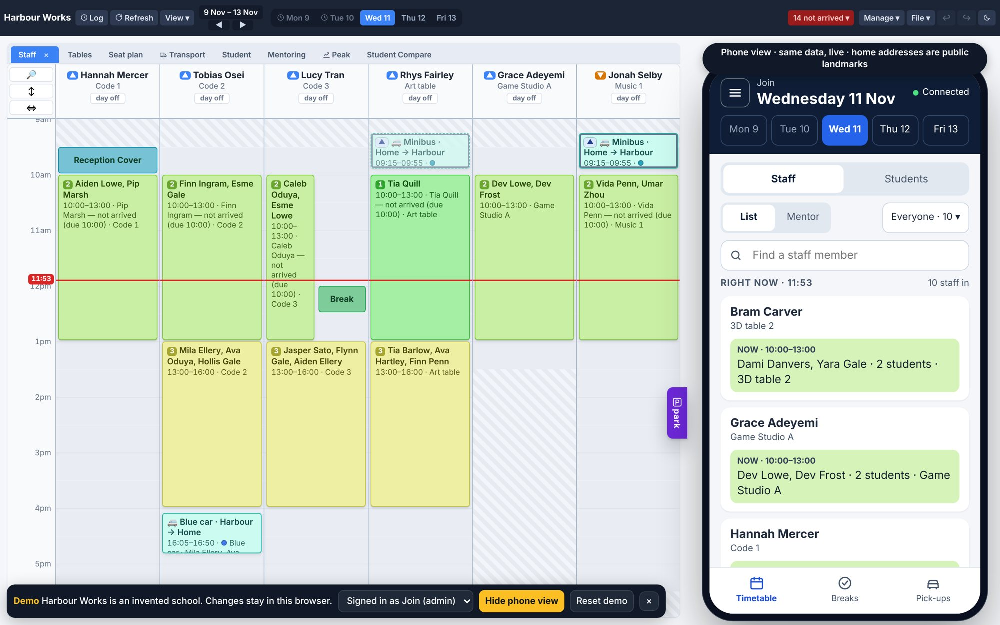

Timetable platform for a two-site school
Replaced a shared Excel sheet with a live editor, a published read-only rota, and a front-desk arrival/pick-up board. 10 staff made 31,000+ changes in October.

Drag to compare: Old Excel sheet vs Web timetable
After · Web Timetable Platform
2 sites · ~100 people · ~570 sessions/week
Live Editor & Rota10 staff · 31,000+ Oct edits
Reports & Desk BoardPull reports, no manual admin
lib/homeaddr.jsHome addresses kept server-side
Before · Old Excel Sheet
Manual admin
Spreadsheets by HandEditing spreadsheets and numbers
Manual AdminNo automated reports
No Server SeparationStatic file shared across staff
“Raf’s rota system has saved us twice over. It saved the company a large bill for a ready-made system, in a crowded market where none of them fitted all our needs. And it removed the manual admin: instead of editing spreadsheets and numbers, we now pull reports and use them to improve how staff work.”
“Working alongside Raf while he built the rota system was a joy. He was open to all feedback and requests, and his communication was excellent throughout. He built it with its users in mind, and it has improved my own productivity.”